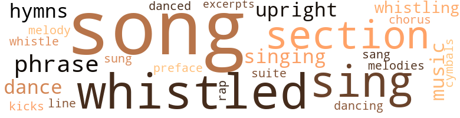
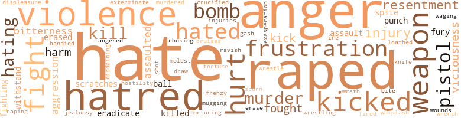
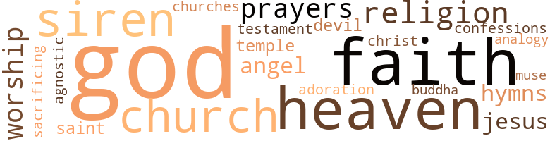

Victims (The), by Lee, James F. (1959)
52 music-related terms matched in this text.
Most frequent terms in this topic: song (6); whistled (6); sing (4); section (4); phrase (3)
chorus.n.01
Definition: any utterance produced simultaneously by a group
| word | sentence |
|---|---|
| chorus | Through the closed window beside which I stood , a familiar , but distant chorus floated from the gigantic clock atop the old post-office building and terminated in five evenly-spaced chimes . |
cymbal.n.01
Definition: a percussion instrument consisting of a concave brass disk; makes a loud crashing sound when hit with a drumstick or when two are struck together
| word | sentence |
|---|---|
| cymbals | Her voice was so quiet and low that it barely reached me , yet when it did , it crashed around my ears like a thousand clanging cymbals . |
dance.v.03
Definition: skip, leap, or move up and down or sideways
| word | sentence |
|---|---|
| dance | " Will you dance with me , Karen ? " |
| dance | " I think I 'd die if you did n't ask me to dance on this song . " |
| dancing | As I hummed the words softly in Karen 's ear , I knew that we were dancing too close for strict respectability . |
| danced | Suddenly I noticed the room 's brightness and the infinitesimal particles that danced along a ray of sunlight shining through the window . |
excerpt.n.01
Definition: a passage selected from a larger work
| word | sentence |
|---|---|
| excerpts | " Yes , Mr. Collins , the paintings along the wall , the shapeless blue-black ones , five in all , are excerpts from the Standard Rorschach Ink-Blot Test . " |
foreword.n.01
Definition: a short introductory essay preceding the text of a book
| word | sentence |
|---|---|
| preface | " So let me preface whatever else I might say with this thought : If someone , or ones - men , boys , male children or any combination of these - should attempt to rape a slovenly slut anywhere within the confines of outer space , and I happened to be near , I 'd use everything at my disposal to kill - not to thwart the attempt , Danny , but to kill - all those involved . |
hymn.n.01
Definition: a song of praise (to God or to a saint or to a nation)
| word | sentence |
|---|---|
| hymns | I was tired of the monotony of the country : the chores - hauling wood for the stoves and drawing water by hand from the well ; the amusements - playing checkers , dominoes , singing hymns , listening to rehashed jokes and riddles . |
| hymns | There had been hymns , riddles and the simple enjoyments of a rural people . |
kick.v.04
Definition: kick a leg up
| word | sentence |
|---|---|
| kicks | " Our problems lead us around indefinitely , until one day an obscure incident kicks their tails soundly . |
music.n.01
Definition: an artistic form of auditory communication incorporating instrumental or vocal tones in a structured and continuous manner
| word | sentence |
|---|---|
| music | " Oh , he was amazed that anyone remembered the song , but if the orchestra can find the music he 'll sing it - for me , " she said , airily . |
| music | The music has stopped . " |
phrase.n.02
Definition: a short musical passage
| word | sentence |
|---|---|
| phrase | " The phrase ' forsaking all others ' sounds good as a marriage vow , but a man adhering to it literally , sometimes defeats the purpose of his own marriage and makes him forsake his mate as well . |
| phrase | " Their trouble is largely ' environmental heredity , ' if I may coin a phrase to illustrate . |
| phrase | I believe you lawyers have a phrase for that . " |
rap.n.05
Definition: genre of African-American music of the 1980s and 1990s in which rhyming lyrics are chanted to a musical accompaniment; several forms of rap have emerged
| word | sentence |
|---|---|
| rap | I hated the unprincipled youths who mistakenly or unwillingly got into trouble the first couple of times , but who thereafter willfully planned and executed their transgressions because their previous brushes with the law had given them the confident belief that they could either " Beat the rap " or " Con the Court " into placing them on probation again . |
section.n.01
Definition: a self-contained part of a larger composition (written or musical)
| word | sentence |
|---|---|
| section | But an article on the front page of the second section caused me to refold the paper and tuck it under my arm before downing the last of the coflee . |
| section | A complete section of sod-grass dirt and topsoil came loose in my hand , as I tried to vent my anguish by a vicious wrench of my right hand . |
| section | " Just sit there and twiddle your neuroses while I finish this final section . " |
| section | Dr. Stevens ' office was in a ten-story building that overlooked a section of Rock Creek Park . |
sing.v.02
Definition: produce tones with the voice
| word | sentence |
|---|---|
| sing | " You figure out a way to get Fisher to sing ' When I Was Young ' and I 'll go . " |
| sing | I 'll get him to sing it , all right . |
| sing | She walked right up to the stage in the Olney Club at eleven-thirty and asked Eddie Fisher to sing " When I Was Young . " |
| sing | " Oh , he was amazed that anyone remembered the song , but if the orchestra can find the music he 'll sing it - for me , " she said , airily . |
| sang | We glided across the floor as Fisher sang the tender ballad . |
| sung | It is nicely sung by Eddie Fisher , and is called ' When I Was Young . ' |
| sings | " He sings as every other man thinks he does in the shower . " |
singing.n.01
Definition: the act of singing vocal music
| word | sentence |
|---|---|
| singing | I was tired of the monotony of the country : the chores - hauling wood for the stoves and drawing water by hand from the well ; the amusements - playing checkers , dominoes , singing hymns , listening to rehashed jokes and riddles . |
| singing | Assisting him magnificently , and rather amazingly , were his singing canaries , " My Feathered Friends . " |
song.n.01
Definition: a short musical composition with words
| word | sentence |
|---|---|
| song | " Oh , he was amazed that anyone remembered the song , but if the orchestra can find the music he 'll sing it - for me , " she said , airily . |
| song | " I think I 'd die if you did n't ask me to dance on this song . " |
| song | This song had always meant the closeness and perfection of our togetherness . |
| song | Karen stirred in my arms and whispered , " Darling , he 's playing our song . " |
| song | I hummed " When I Was Young " along with the buzz of the electric razor , and blared the words to the song under cover of the driving spray . |
| song | " I know I was imagining it , but I could almost hear voices humming our song - that part that goes : ' The love that I was looking for I find here in your eyes . ' |
| songs | In between , his program provided a variety of popular and standard songs and useful fishing information . |
suite.n.01
Definition: a musical composition of several movements only loosely connected
| word | sentence |
|---|---|
| Suite | Big black letters on the frosted glass door of Suite 802 , spelled out : DR. A. L. STEVENS Psychiatrist WALK IN I did . |
tune.n.01
Definition: a succession of notes forming a distinctive sequence
| word | sentence |
|---|---|
| melody | Long after the throaty voice and hauntingly sweet melody had faded into nothingness , we sat silently . |
| line | " If you want a book , you 'll have to wait your turn in line . " |
| melodies | Frequently , he accompanied them with his organ melodies . |
upright.n.02
Definition: a piano with a vertical sounding board
| word | sentence |
|---|---|
| upright | I was going to ask . . . " I stopped abruptly and gingerly pushed her upright on the seat . |
| upright | She sat bolt upright at that , and only my hands on her shoulders prevented her from rising . |
whistle.v.01
Definition: make whistling sounds
| word | sentence |
|---|---|
| whistled | I toweled briskly and whistled as I dressed in a white shirt , light-blue suit and shiny , plain-toed black shoes . |
| whistle | We were stepping off the sidewalk when the wolf whistle came . |
| whistled | You wanted to fight tonight because one of them whistled at me . |
| whistled | In my youth I had probably also whistled on occasion . |
| whistled | I whistled softly through my teeth . |
| whistled | I whistled softly in astonishment and somebody honked a horn behind me . |
| whistling | Squarely in the middle stood a small statue of a naked boy whistling while he fished in a spouting fountain . |
| whistled | I whistled tunelessly in the bedroom as I undressed . |
| whistling | I started whistling again as the driving needles pricked my skin , then switched to a loud , off-key version of " Danny Boy . " |
256 violence-related terms matched in this text.
Most frequent terms in this topic: hate (33); raped (21); anger (19); hatred (15); violence (11)
abhor.v.01
Definition: find repugnant
| word | sentence |
|---|---|
| loathed | Her body went past in a sidling position as if she loathed to touch me . |
abrasion.n.01
Definition: an abraded area where the skin is torn or worn off
| word | sentence |
|---|---|
| scratches | Fortunately , there were only a couple of scratches along my neck , the strong fibers in my suit coat having borne the brunt of her slashing nails . |
| scratches | There were scratches on the door jamb near the night latch , indicating that a rather amateurish job of jimmying had been attempted or completed . |
aggravation.n.01
Definition: an exasperated feeling of annoyance
| word | sentence |
|---|---|
| exasperation | Agnes stood up , exasperation etched on her face . |
aggression.n.01
Definition: a disposition to behave aggressively
| word | sentence |
|---|---|
| aggression | The primary victims were those who suffered aggression : the man who was mugged or stabbed or beaten or robbed - or murdered ; the woman whose pocketbook was snatched or whose home was broken into , valuables stolen and furniture mutilated ; the citizen whose car was stolen and wrecked , or whose store was broken into and ransacked ; the family that lost a loved one through wanton murder or wanton lust ; the Karen and Danny Collinses whose marriage was threatened because of the cravings of unprincipled hoodlums . |
| aggression | By saddling each of us with the blame , separately , she hoped the result would be compassion and tenderness , coupled with determination and aggression on the part of each of us . " |
| aggression | " Because she knew that each of us was holding back for fear the other 's condition , as we imagined it , would resent such aggression . |
anger.n.01
Definition: a strong emotion; a feeling that is oriented toward some real or supposed grievance
| word | sentence |
|---|---|
| anger | " So there are at least four of them , " I thought , and my anger turned to alarm . |
| anger | My face must have registered the astonishment I felt - astonishment that turned to anger . |
| anger | I tried desperately to keep the anger out of my voice when I answered . |
| anger | She turned completely around like a model , her whole body quivering with anger . |
| anger | I 'd backed myself into a corner but her anger and biting sarcasm hurt too much for me to admit it . |
| anger | My rising anger broke all bounds and I heatedly plunged on . |
| anger | It calmed my violent anger . |
| anger | My tranquillity turned to seething anger . |
| anger | Then , in frustrated anger , " Where the hell 's the air conditioner in this damn office ? " |
| ire | Regardless of her profession , a woman 's ire is always aroused when it appears that she has been stood up by a mere male . " |
| Anger | Anger flashed in her gray eyes . |
| anger | Her anger and resentment vanished and she pointedly ignored my growing hostility . |
| anger | The waiter 's intrusion was unwelcome , but it offered us both a respite from our anger . |
| anger | " For professional people , we are quick to anger , " she said through the smoke . |
| anger | I vented on him the anger I felt at myself . |
| anger | " Hot-tempered , quick to anger , bristling in defiance , the way you were just now when I said that you might be responsible for your marital difficulties . " |
| anger | Your own guilt complex manifests itself in an insane and violent anger toward the H-Bomb itself - toward the delinquents who attacked Karen . " |
| anger | A weak smile finally erased most of the anger from her face . |
| anger | " Karen said she told you this once before but then as a hurt , frustrated wife in anger . |
| anger | While the waitress set the steaks before us , I arranged my thoughts to eliminate the distortion that anger had aroused . |
| anger | I lowered my voice , not because what I was saying could reach people at other tables , but because I was consciously controlling the rising anger that flamed up whenever I recapitulated , either mentally or vocally , the events of the attack upon us . |
anger.v.02
Definition: become angry
| word | sentence |
|---|---|
| angered | Her silence added to my frustration and angered me . |
assail.v.01
Definition: attack someone physically or emotionally
| word | sentence |
|---|---|
| assaulted | I wanted to tell her I was wrong in hating the youths who assaulted her . |
| assaulted | I would be sacrificing my self-respect if , in an attempt to persuade her not to leave , I told her I was wrong to hate those who had assaulted her . |
| assaulted | No mention had been made as to how they had escaped ; how many officers they had assaulted , or overpowered ; no warning as to whether or not they were believed to be armed . |
bandy.v.02
Definition: exchange blows
| word | sentence |
|---|---|
| bandied | She bandied words with me . |
bruise.n.01
Definition: an injury that doesn't break the skin but results in some discoloration
| word | sentence |
|---|---|
| bruises | Pain was a fiery devil in my many sores , cuts , and bruises . |
contemn.v.01
Definition: look down on with disdain
| word | sentence |
|---|---|
| scorn | When I 'm timid , you scorn me as if I had something loathsome in my mind . |
| disdaining | " Unless , of course , you are merely disdaining to engage in serious talk with a layman . " |
craze.n.02
Definition: state of violent mental agitation
| word | sentence |
|---|---|
| frenzy | I attacked the sandhill with frenzy , unconscious that my bare feet were being torn by the sharp , brown pebbles . |
crucify.v.01
Definition: kill by nailing onto a cross
| word | sentence |
|---|---|
| crucified | Because of existing circumstances , youths in the early forties were mildly censured for deeds that their parents would have been crucified for a generation earlier . |
cut.n.05
Definition: a wound made by cutting
| word | sentence |
|---|---|
| gash | I whirled swiftly and violently and the steel in one of the youth 's hands slashed viciously across my forehead , opening a long gash that gushed blood . |
defy.v.01
Definition: resist or confront with resistance
| word | sentence |
|---|---|
| withstand | It was too powerful to withstand . |
| withstand | However , a normal , vigorous woman directed by intelligent , loving parents , and given two years of happy marriage was able to withstand the powerful shock . |
displeasure.n.01
Definition: the feeling of being displeased or annoyed or dissatisfied with someone or something
| word | sentence |
|---|---|
| displeasure | She muzzled her face over my bristled cheeks and pouted with displeasure . |
draw.v.23
Definition: pull (a person) apart with four horses tied to his extremities, so as to execute him
| word | sentence |
|---|---|
| draw | She roused , blinked her eyes drowsily , then reached up a hand to draw my head down for a much longer kiss . |
eliminate.v.03
Definition: kill in large numbers
| word | sentence |
|---|---|
| eradicate | " If we could miraculously eradicate the slums , banish poverty , educate all parents and have Utopian civilization from this moment forth , the future would undoubtedly be free of juvenile delinquency - except for those individuals who were born monsters and who grew up to be mean , dangerous hoodlums all by themselves , in spite of a good environment . |
| eradicate | I say these things because concentrated effort on the part of a concerned public could have helped to eradicate some of these deficiencies long ago . |
engage.v.07
Definition: carry on (wars, battles, or campaigns)
| word | sentence |
|---|---|
| waging | It is more probable that the long campaign you 've been waging in support of mental relaxation is bearing fruit . |
erase.v.01
Definition: remove from memory or existence
| word | sentence |
|---|---|
| erased | A weak smile finally erased most of the anger from her face . |
| erase | The disposition to be taken could serve to erase an innate uneasiness . " |
| erased | Her eyes met mine over Karen 's shoulder for a split second , and I saw the bewilderment and astonishment there before she forcibly erased them . |
exterminate.v.01
Definition: kill en masse; kill on a large scale; kill many
| word | sentence |
|---|---|
| exterminate | " We created them , too , but that responsibility is too large a burden for your conscience to bear , because we must exterminate them - we dare not try to re-educate them . |
ferociousness.n.01
Definition: the trait of extreme cruelty
| word | sentence |
|---|---|
| viciousness | Karen reacted with a hurt viciousness . |
| viciousness | The Juvenile Court secrecy barrier does not let the public find out about the real viciousness of delinquency . |
| viciousness | " Because delinquents are judged in respect to their age rather than in respect to the violence and viciousness of the crimes in which they 're involved . " |
fight.n.05
Definition: a boxing or wrestling match
| word | sentence |
|---|---|
| fight | Moans roused me , forced my exhausted self to renew my fight . |
| fight | " We 're like two prizefighters trained to a fine edge two days before the big fight . |
fight.v.02
Definition: fight against or resist strongly
| word | sentence |
|---|---|
| fought | I fought the awful oblivion swooping in upon me . |
| fight | Unable to escape , I turned weakly to fight like a cornered thing , but the man-animals stormed over me , trampling me into the sand , their claws ripping the few unscarred patches on my bloody body . |
| fight | You wanted to fight tonight because one of them whistled at me . |
| fight | Well , I 'll always be soiled and unclean and you can fight your emotions until your belly bursts , but I 'm not going to hate the world because you do . |
| fought | I fought back the tears which welled up in my eyes . |
| fight | It 's like some of our well-meaning citizens who try to fight communism by keeping the rank and file ignorant of it - both as an ideology and as it is practiced in Russia today . " |
| fight | I received the impression that he would fight wild beasts barehanded for the privilege of doing her a favor . |
| fighting | You 're not fighting them - you 're fighting your wife ! " |
| fighting | You 're not fighting them - you 're fighting your wife ! " |
| fought | The tension relaxed somewhat , or perhaps it was forgotten as I fought the congested traffic through Baltimore , then returned as suburban Baltimore gave way to rural Maryland , followed by Delaware and Pennsylvania . |
frustration.n.03
Definition: a feeling of annoyance at being hindered or criticized
| word | sentence |
|---|---|
| frustrations | We 've had to experiment , improvise , change , suffer disappointments and frustrations to attain compatibility in the many things that have contributed immeasurably to our successful marriage . |
| frustration | I tried to cry , but groaned with helpless frustration ; the words refused to leave my throat . |
| frustration | The big man studied Gardner for a moment , then thrust his heavy hand through his iron-gray hair in a gesture of frustration . |
| frustration | He turned abruptly , snatched open the door and marched stiffly through it - the only sign of his frustration his attempt to slam the door behind him . |
| frustration | Her silence added to my frustration and angered me . |
| frustration | These outgrowths were so numerous and had expanded to such proportions that they now caused violent arguments - in sharp contrast to the basic problem which caused emotional frustration but brought only words of compassion , apology and tenderness . |
| frustration | I wondered whether the strain of months of worry and anxiety and frustration were showing in my face . |
fury.n.01
Definition: a feeling of intense anger
| word | sentence |
|---|---|
| fury | Her voice fairly shook with fury . |
| fury | Just thinking that made the muscles bunch along my jaw in futile fury . |
gag.v.06
Definition: cause to retch or choke
| word | sentence |
|---|---|
| choking | Her beauty was something I felt ; it filled the room like an invisible crowd , and I swallowed the choking lump her nearness created , even though she was across the room . |
hate.n.01
Definition: the emotion of intense dislike; a feeling of dislike so strong that it demands action
| word | sentence |
|---|---|
| hate | " You 're angry and you harbor a smouldering hate not because Karen Collins was raped , but because your wife was raped . " |
| hate | " You 're so full of hate that you do n't know what you 're hating any more . |
| hatred | But even while I sat convincing myself of the rightness of my hatred , Karen 's words seeped through my mind . |
| hate | " You 're so full of hate that you do n't know what you 're hating anymore . |
| hatred | Your love of your wife establishes within you an unrelenting hatred toward those whom we have passed sentence on today . |
| hatred | Your continual pressure for trial in a criminal court is indicative of this hatred . |
| hatred | Karen was wrong about my hatred . |
| hate | The hate , the vengeance I vowed , the juvenile violence and the inadequacy of the Corrections Program were all surface thoughts . |
| hate | I chose Walter Benton 's This Is My Beloved , and read : " Because hate is legislated - written into the primer and the testament , shot into our blood and brain like vaccine or vitamins . |
| hatred | Perhaps those who object to your hatred of delinquents are likening that hate to a hatred of the H-Bomb , since that is the analogy I 've been using . |
| hate | Perhaps those who object to your hatred of delinquents are likening that hate to a hatred of the H-Bomb , since that is the analogy I 've been using . |
| hatred | Perhaps those who object to your hatred of delinquents are likening that hate to a hatred of the H-Bomb , since that is the analogy I 've been using . |
| hatred | She sees this in your unreasonable hatred of delinquents - a hatred that , to her , exists not because they wronged another human being , but because they spoiled something for you . |
| hatred | She sees this in your unreasonable hatred of delinquents - a hatred that , to her , exists not because they wronged another human being , but because they spoiled something for you . |
| hatred | " She reasons that your hatred is a quest for vengeance , not for justice . |
| hatred | Rather , you must purge yourself of the hatred in your heart and the conflicting , distorted moral complex that our dual standards have developed . |
| hatred | Your own hatred is the barrier between you . |
| hatred | " That 's almost it , Danny , although the truth is that your hatred prevents your wife from trusting you with her love . " |
| hatred | Rather , you must purge yourself of the hatred in your heart and the conflicting , distorted moral complex that our dual standards have developed . |
| hatred | Your own hatred is the barrier between you . |
| hatred | " That 's almost it , Danny , although the truth is that your hatred prevents your wife from trusting you with her love . " |
| hate | This was the predilection for violence that Agnes had accused me of , the all-consuming hate that Karen said left her outside of my life . |
| hate | " I 've been seeing hate for a long time . |
| hate | Then Karen was in my arms and I knew that love was stronger than hate , and that there would never again be a suspicion or doubt between my wife and me . |
hate.v.01
Definition: dislike intensely; feel antipathy or aversion towards
| word | sentence |
|---|---|
| hate | You hate every teen-ager you see because five of them raped your wife long ago . |
| hating | " You 're so full of hate that you do n't know what you 're hating any more . |
| hate | You simply hate them all . |
| hate | Well , I 'll always be soiled and unclean and you can fight your emotions until your belly bursts , but I 'm not going to hate the world because you do . |
| hate | " According to you , I 'm not supposed to hate the hoodlums who did this ; I 'm not supposed to see you as a changed person ; yet , from your actions , I 'm not supposed to treat you normally , either . " |
| hating | " You 're so full of hate that you do n't know what you 're hating anymore . |
| hate | You simply hate them all . |
| hated | And I hated them even more now . |
| hated | But I hated immoral , unprincipled hoodlums - and I admitted their existence - I did not hate idle , mischievous kids . |
| hate | But I hated immoral , unprincipled hoodlums - and I admitted their existence - I did not hate idle , mischievous kids . |
| hating | I wanted to tell her I was wrong in hating the youths who assaulted her . |
| hate | I would be sacrificing my self-respect if , in an attempt to persuade her not to leave , I told her I was wrong to hate those who had assaulted her . |
| hated | At this moment Karen 's accusations could be accurately applied : I hated the complete operational program that Washington , D.C. , had set up to deter juvenile crime or to rehabilitate juvenile offenders . |
| hated | Karen was correct in feeling that I hated it all . |
| hated | I hated a program of youth-correction whose operation , if it failed , placed the public in danger . |
| hated | I hated the unprincipled youths who mistakenly or unwillingly got into trouble the first couple of times , but who thereafter willfully planned and executed their transgressions because their previous brushes with the law had given them the confident belief that they could either " Beat the rap " or " Con the Court " into placing them on probation again . |
| hated | If anything , I hated them more because that made it easier for me to rationalize my own action . |
| hates | Karen tells me it 's one of your ingrained hates . " |
| hate | But whatever we may or may not do , we ca n't hate him . " |
| hate | Only I find it impossible not to hate vandalism , unprovoked physical and sexual attacks and wanton murder , even though they are committed by frustrated teen-agers . " |
| Hate | " Hate what they do , if you like , but not them , " she entreated . |
| hate | " I hate destruction and violence as much as you do - probably more , but , thank God , I ca n't bring myself to hate the perpetrators the way you do , " she added with fervor . |
| hate | " I hate destruction and violence as much as you do - probably more , but , thank God , I ca n't bring myself to hate the perpetrators the way you do , " she added with fervor . |
| hate | " If you 're about to tell me again that I should n't hate those stink . . . " " Be angry at them ! " she snapped back at me . |
| hate | Be angry at them , hate them . |
| hating | It is an empty victory for you to prove that you are justified in hating as you do , if that very hate widens the gap between you and your wife . " |
| hate | It is an empty victory for you to prove that you are justified in hating as you do , if that very hate widens the gap between you and your wife . " |
| hate | All I need do is make her understand that my advances are n't forced ; make her know that I do n't hate juvenile delinquents , but the harm they do . |
| hate | " Because you do hate delinquents - the people , not just the acts ! " |
| hate | " What I want to know is , regardless of whether I do hate them or not , why would it be so difficult for me to convey the idea to Karen that I do n't hate them ? |
| hate | " What I want to know is , regardless of whether I do hate them or not , why would it be so difficult for me to convey the idea to Karen that I do n't hate them ? |
| hate | " Remember this , Danny : Perhaps , it was your training by a stern mother , or perhaps it was society 's environment that helped you develop into a typical American male , which is n't necessarily flattering , or perhaps it was something else that taught you to hate youthful wrong-doing with an uncompromising fervor . |
| hate | But whatever it was , you will never convince Karen you do n't hate the boys who raped her until your heart is able to forgive them . |
| hate | " Your job is not to convince Karen that you do n't hate any and all delinquents or that you are n't repulsed by the thought of re-establishing a sexual relationship with a raped woman . |
| hate | " You make it sound as if I hate the guys who raped Karen more than I love my wife , " I growled , harshly . |
| hate | " Your job is not to convince Karen that you do n't hate any and all delinquents or that you are n't repulsed by the thought of re-establishing a sexual relationship with a raped woman . |
| hate | " You make it sound as if I hate the guys who raped Karen more than I love my wife , " I growled , harshly . |
hostility.n.01
Definition: a hostile (very unfriendly) disposition
| word | sentence |
|---|---|
| hostility | Her anger and resentment vanished and she pointedly ignored my growing hostility . |
hurt.v.04
Definition: cause damage or affect negatively
| word | sentence |
|---|---|
| hurt | I pretended to be hurt . |
| hurt | I 'd backed myself into a corner but her anger and biting sarcasm hurt too much for me to admit it . |
hydrogen_bomb.n.01
Definition: a nuclear weapon that releases atomic energy by union of light (hydrogen) nuclei at high temperatures to form helium
| word | sentence |
|---|---|
| H-Bomb | The unprovoked attack on you and your wife was a sort of H-Bomb explosion . |
| H-Bomb | Your own guilt complex manifests itself in an insane and violent anger toward the H-Bomb itself - toward the delinquents who attacked Karen . " |
| H-Bomb | Perhaps those who object to your hatred of delinquents are likening that hate to a hatred of the H-Bomb , since that is the analogy I 've been using . |
| H-Bomb | Maybe they 're concerned about the events and world conditions which allow the growth and development of the H-Bomb - just as they are concentrating their energies on situations , circumstances and events which allow the growth and development of juvenile delinquents . " |
| H-Bombs | " H-Bombs are inanimate . " |
| H-Bomb | We must do all of the thinking for the H-Bomb , but not for today 's youth . |
injury.n.01
Definition: any physical damage to the body caused by violence or accident or fracture etc.
| word | sentence |
|---|---|
| harm | Nothing but harm . " |
| hurt | My thoughts and feelings ran the gauntlet , from extreme anxiety after Karen 's outburst , through hurt , hate , compassion and back to anxiety . |
| hurt | Karen reacted with a hurt viciousness . |
| injury | " If an attempt at correction , or punishment , if that 's what you prefer to call it , can result in permanent psychological or psychiatric injury to the juvenile subject , why ca n't these rehabilitative agencies recognize that permanent damage to the victim can result from the harrowing experiences he or she suffers at the hands of the same youths about which these agencies are so greatly concerned ? " |
| injury | " I assure you that crude handling of juveniles by those uneducated in human nature can result in greater injury than that . " |
| injury | " Or is it no longer an axiom of contemporary psychiatry that psychic trauma resulting from profound emotional shock may symptomatically manifest itself until some years after the injury ? " |
| injury | The wonder is that she did n't suffer permanently from shock or physical injury . |
| harm | " For you , despite your army service , the incident was also the most harrowing experience of your life ; not because of its violence , but because it meant harm to your wife and because you were frustrated in your attempt to stop it . |
| harm | All I need do is make her understand that my advances are n't forced ; make her know that I do n't hate juvenile delinquents , but the harm they do . |
| hurt | " Karen said she told you this once before but then as a hurt , frustrated wife in anger . |
| injuries | Naturally , there were some aggravated and torn tissues because of the tender membranes involved , but no prolonged physical injuries . |
jealousy.n.01
Definition: a feeling of jealous envy (especially of a rival)
| word | sentence |
|---|---|
| jealousy | I feigned jealousy . |
kick.v.04
Definition: kick a leg up
| word | sentence |
|---|---|
| kicks | " Our problems lead us around indefinitely , until one day an obscure incident kicks their tails soundly . |
kick_back.v.02
Definition: spring back, as from a forceful thrust
| word | sentence |
|---|---|
| kicked | Someone kicked me on the side of the head and another wrenched the pistol from my fingers . |
| kick | Sonofabitch kick me in my prick . |
| kicked | The fifth youth kicked me in the ribs . |
| kicked | With a final , furious flourish , she kicked the torn panties from her and stood naked . |
| kicked | Gardner came to his feet and viciously kicked the empty glass in front of him . |
| kicked | I walked across the green lawn that we had groomed with loving tenderness , and kicked the " Please Let Me Grow " sign into the darkness when I stumbled over it . |
| kick | " If you 'll allow me this unfair concession , we can kick this subject around . |
| kicked | Agnes removed her thin jacket , baring her bronzed shoulders , kicked off her shoes and socks and frolicked in the water like a happy kid . |
| kicked | I kicked Donaldson in the groin . |
kill.v.10
Definition: cause the death of, without intention
| word | sentence |
|---|---|
| Kill | " Kill the bastard ! " |
| kill | I 'll kill them all ! |
| kill | " So let me preface whatever else I might say with this thought : If someone , or ones - men , boys , male children or any combination of these - should attempt to rape a slovenly slut anywhere within the confines of outer space , and I happened to be near , I 'd use everything at my disposal to kill - not to thwart the attempt , Danny , but to kill - all those involved . |
| kill | " So let me preface whatever else I might say with this thought : If someone , or ones - men , boys , male children or any combination of these - should attempt to rape a slovenly slut anywhere within the confines of outer space , and I happened to be near , I 'd use everything at my disposal to kill - not to thwart the attempt , Danny , but to kill - all those involved . |
| killed | I 'm interested in the further FBI figures which say that of the eighteen FBI agents killed in the performance of their duties , eleven were killed by criminals who were on probation , parole or had received some form of clemency earlier in their criminal careers . |
| killed | I 'm interested in the further FBI figures which say that of the eighteen FBI agents killed in the performance of their duties , eleven were killed by criminals who were on probation , parole or had received some form of clemency earlier in their criminal careers . |
knife.n.02
Definition: a weapon with a handle and blade with a sharp point
| word | sentence |
|---|---|
| knife | I lifted the bottle from the cabinet to the sink , then paused with the knife against the seal . |
malice.n.01
Definition: feeling a need to see others suffer
| word | sentence |
|---|---|
| spite | " If we could miraculously eradicate the slums , banish poverty , educate all parents and have Utopian civilization from this moment forth , the future would undoubtedly be free of juvenile delinquency - except for those individuals who were born monsters and who grew up to be mean , dangerous hoodlums all by themselves , in spite of a good environment . |
| spite | " In spite of all the reasons given , the projects launched , the factors enumerated , somebody or some body arbitrarily establishes eighteen as the age when a person 's acts against the law become crimes instead of indiscretions . |
molest.v.01
Definition: harass or assault sexually; make indecent advances to
| word | sentence |
|---|---|
| molest | It was doubtful if these hoodlums would attempt to molest her at our home should they know its location . |
mugging.n.01
Definition: assault with intent to rob
| word | sentence |
|---|---|
| mugging | Murder , armed robbery , mugging and house-breaking : These were crimes of violence which required planning and calculation , regardless of the age of the person or persons who committed the act . |
murder.n.01
Definition: unlawful premeditated killing of a human being by a human being
| word | sentence |
|---|---|
| murder | That 's worse than robbery and murder and all other crimes combined , is n't it ? " |
| murder | The primary victims were those who suffered aggression : the man who was mugged or stabbed or beaten or robbed - or murdered ; the woman whose pocketbook was snatched or whose home was broken into , valuables stolen and furniture mutilated ; the citizen whose car was stolen and wrecked , or whose store was broken into and ransacked ; the family that lost a loved one through wanton murder or wanton lust ; the Karen and Danny Collinses whose marriage was threatened because of the cravings of unprincipled hoodlums . |
| murder | Such as requesting the passing of a statute which automatically waives the Court 's jurisdiction involving rape or murder . |
| murder | Only I find it impossible not to hate vandalism , unprovoked physical and sexual attacks and wanton murder , even though they are committed by frustrated teen-agers . " |
murder.v.01
Definition: kill intentionally and with premeditation
| word | sentence |
|---|---|
| murdered | The primary victims were those who suffered aggression : the man who was mugged or stabbed or beaten or robbed - or murdered ; the woman whose pocketbook was snatched or whose home was broken into , valuables stolen and furniture mutilated ; the citizen whose car was stolen and wrecked , or whose store was broken into and ransacked ; the family that lost a loved one through wanton murder or wanton lust ; the Karen and Danny Collinses whose marriage was threatened because of the cravings of unprincipled hoodlums . |
musket_ball.n.01
Definition: a solid projectile that is shot by a musket
| word | sentence |
|---|---|
| ball | Here I watched the fiery ball of the sun as it dropped slowly out of sight beneath the curve of the earth , and turned the clouds into a blaze of splendor . |
| ball | The sun became a large , orange ball and sank slowly beneath the Virginia hills . |
open_fire.v.01
Definition: start firing a weapon
| word | sentence |
|---|---|
| fired | He fired the cigarette and blew smoke from the corner of his mouth without removing the cigarette from between his lips . |
pain.v.02
Definition: cause emotional anguish or make miserable
| word | sentence |
|---|---|
| hurt | Your pride was hurt and that 's the only thing that has n't readjusted itself . |
| hurt | The first time in over seven months that it had hurt at all . |
pistol.n.01
Definition: a firearm that is held and fired with one hand
| word | sentence |
|---|---|
| pistol | I got a glimpse of the weapon - it was the butt of a long-barreled target pistol . |
| pistol | The force of the blow shook the pistol from the boy 's hand . |
| pistol | I was knocked to the ground again and my hands , grasping for support , closed on the barrel of the fallen pistol . |
| pistol | Someone kicked me on the side of the head and another wrenched the pistol from my fingers . |
| pistol | I went down the hall to the bedroom and leaped involuntarily against the wall when two pistol shots crashed into a single sound as I neared the living room . |
punch.n.01
Definition: (boxing) a blow with the fist
| word | sentence |
|---|---|
| punch | You know about the amateur boxers who , after their bouts in the ring , roam the streets , finding sport in a savage attempt to see which one can knock some poor , defenseless soul senseless with one punch , while the others hold the victim helpless . |
| punch | Karen flung herself on my arm to deflect the punch I threw at his neck , as he was slumped forward . |
rape.n.03
Definition: the crime of forcing a woman to submit to sexual intercourse against her will
| word | sentence |
|---|---|
| assault | " Two were sent to the Federal Training School on conviction of assault with a deadly weapon . " |
| assault | " These organizations , ably complemented by representatives from the Society of Sponsors , prevailed upon us to drop the more serious rape charge and allow these youthful offenders to be dealt with on the lesser issues of disturbing the peace , disorderly conduct and assault with a deadly weapon . |
rape.v.01
Definition: force (someone) to have sex against their will
| word | sentence |
|---|---|
| ravish | I held her tenderly , suppressing the purely animal urge to ravish her wonderful body , and trembling as I sought to control the wonder she had awakened , " Danny , I 'm so sorry , " she whispered , and then was silent for a long time . |
| raped | They had raped her ! |
| raped | I have only to tell myself that other women have been raped before and that they are living perfectly normal lives . |
| raped | Hell , / was n't raped . " |
| raped | " I 've been raped before . |
| raped | You hate every teen-ager you see because five of them raped your wife long ago . |
| raped | You wo n't try to distinguish between the ones who raped me and all the others . |
| raped | Are you censuring me because I 'm attempting to treat you in the same manner as I did before you were raped ? |
| raped | You wo n't try to distinguish between the ones who raped me and all the others . |
| raped | " Having one 's wife raped is n't trouble ? " |
| raping | " Two of the three guys who were sent to the Federal Training School for raping Karen , escaped yesterday - Claude Donaldson and Clarence Trembly . " |
| raped | I want you to know this , so that you may try to understand that what I 'm about to say is not being said to a man whose wife has been raped . |
| raped | I want to talk with a Danny Collins who feels the way you do , but whose wife has n't been raped . |
| raped | What has all that to do with the bastards who raped Karen ? " |
| raped | " I - I almost raped you ! " |
| raped | About three weeks ago , Oliver asked me if I 'd ever been consulted about the psychiatric problems that might arise in the mind of a girl who had been raped . |
| raped | I told him that I 'd handled only one case in which the girl readily admitted she 'd been raped , but that case histories had been written about numerous occurrences . |
| raped | " Karen feels that the fact that she was raped has mattered a great deal to you , not just in your concern for her welfare , but in your own mind where your deep respect for her is stored . |
| raped | But whatever it was , you will never convince Karen you do n't hate the boys who raped her until your heart is able to forgive them . |
| raped | " Your job is not to convince Karen that you do n't hate any and all delinquents or that you are n't repulsed by the thought of re-establishing a sexual relationship with a raped woman . |
| raped | " You make it sound as if I hate the guys who raped Karen more than I love my wife , " I growled , harshly . |
| raped | " Your job is not to convince Karen that you do n't hate any and all delinquents or that you are n't repulsed by the thought of re-establishing a sexual relationship with a raped woman . |
| raped | " You make it sound as if I hate the guys who raped Karen more than I love my wife , " I growled , harshly . |
resentment.n.01
Definition: a feeling of deep and bitter anger and ill-will
| word | sentence |
|---|---|
| bitterness | " Evidently you could get it fixed , " he snorted with a trace of bitterness - obviously misreading my apparent disinterest . |
| resentment | They seldom see restless , idle , befuddled youth tempestuously explode in active resentment against attitudes , laws and codes as you have seen it . " |
| bitterness | Gard detected my bitterness and paused at the office door to caution me . |
| resentment | Her anger and resentment vanished and she pointedly ignored my growing hostility . |
| resentment | " Has it ever occurred to you , Danny , that the resentment of authority by some of our youth can be attributed in part to the independence they have from the freedom we allow them ? |
| resentment | You 're talking about youth 's resentment of people , while I 'm concerned about their lack of recognition of the very codes of decency that bind human beings into a solid unit . |
| bitterness | She and her staff ---- " " Yeah , yeah , I know , " Gardner broke in with a trace of bitterness . |
shoot.v.02
Definition: kill by firing a missile
| word | sentence |
|---|---|
| shot | I chose Walter Benton 's This Is My Beloved , and read : " Because hate is legislated - written into the primer and the testament , shot into our blood and brain like vaccine or vitamins . |
sting.n.03
Definition: a painful wound caused by the thrust of an insect's stinger into skin
| word | sentence |
|---|---|
| bite | I saw her bite savagely at it and rip the flesh with her teeth . |
torment.v.01
Definition: torment emotionally or mentally
| word | sentence |
|---|---|
| torturing | " Every day it gets worse because you go on torturing yourself . |
| torture | " Why torture yourself ? |
violence.n.01
Definition: an act of aggression (as one against a person who resists)
| word | sentence |
|---|---|
| violence | Newspaper accounts of apparently unprovoked teen-age violence in recent weeks whirled through my mind . |
| violence | I remembered the shadowy , hulking figures executing a planned crime of violence like a pack of jungle animals . |
| violence | In the course of events , however , they 'd been offended by my attitude and that had led to the violence . |
| violence | Murder , armed robbery , mugging and house-breaking : These were crimes of violence which required planning and calculation , regardless of the age of the person or persons who committed the act . |
| violence | The hate , the vengeance I vowed , the juvenile violence and the inadequacy of the Corrections Program were all surface thoughts . |
| violence | Consequently , violence will undoubtedly ensue ----- " " Danny , do you know what it takes to be a Juvenile Court Judge ? " |
| violence | " I hate destruction and violence as much as you do - probably more , but , thank God , I ca n't bring myself to hate the perpetrators the way you do , " she added with fervor . |
| violence | " For you , despite your army service , the incident was also the most harrowing experience of your life ; not because of its violence , but because it meant harm to your wife and because you were frustrated in your attempt to stop it . |
| violence | This was the predilection for violence that Agnes had accused me of , the all-consuming hate that Karen said left her outside of my life . |
| violence | " Because delinquents are judged in respect to their age rather than in respect to the violence and viciousness of the crimes in which they 're involved . " |
| violence | Damn half-assed young ruffians attacking unsuspecting couples with a violence only the victims could truly comprehend . |
weapon.n.01
Definition: any instrument or instrumentality used in fighting or hunting
| word | sentence |
|---|---|
| weapon | My hands cleared the fender just as a weapon struck a mighty blow that would have crushed my fingers . |
| weapon | I got a glimpse of the weapon - it was the butt of a long-barreled target pistol . |
| weapon | We can not afford to use ' shysteristic ' tactics , morally , or as a legal weapon before these nine Justices . |
| weapon | " Two were sent to the Federal Training School on conviction of assault with a deadly weapon . " |
| weapon | He turned from the wall and snatched a paperweight from the desk for a weapon . |
| weapon | Recognition came late for him , but with a jolt that jarred the weapon from his fingers . |
| weapon | I threw my coat forward so that it flapped about the knife-hand with enough force to knock the loosely-clutched weapon to the floor . |
| weapon | " These organizations , ably complemented by representatives from the Society of Sponsors , prevailed upon us to drop the more serious rape charge and allow these youthful offenders to be dealt with on the lesser issues of disturbing the peace , disorderly conduct and assault with a deadly weapon . |
whiplash.n.01
Definition: an injury to the neck (the cervical vertebrae) resulting from rapid acceleration or deceleration (as in an automobile accident)
| word | sentence |
|---|---|
| whiplash | Two hours of whiplash question and answer on this Seaman Project . " |
wound.n.01
Definition: an injury to living tissue (especially an injury involving a cut or break in the skin)
| word | sentence |
|---|---|
| wounds | The sweat strained from my pores and blood poured from my wounds . |
wrath.n.01
Definition: intense anger (usually on an epic scale)
| word | sentence |
|---|---|
| wrath | It demonstrated the wrath of justice by sentencing three of the youths to the Federal Training School . |
wrench.n.01
Definition: a sharp strain on muscles or ligaments
| word | sentence |
|---|---|
| wrench | A complete section of sod-grass dirt and topsoil came loose in my hand , as I tried to vent my anguish by a vicious wrench of my right hand . |
wrestle.v.01
Definition: combat to overcome an opposing tendency or force
| word | sentence |
|---|---|
| wrestling | We 've been wrestling with this thing since Monday . " |
| wrestle | I 'm too big to wrestle with a car wheel in this Washington traffic and Washington heat . |
61 religion-related terms matched in this text.
Most frequent terms in this topic: God (14); faith (5); church (4); siren (4); prayers (3)
agnostic.n.02
Definition: a person who claims that they cannot have true knowledge about the existence of God (but does not deny that God might exist)
| word | sentence |
|---|---|
| Agnostic | Agnostic would be closer . " |
buddha.n.02
Definition: one who has achieved a state of perfect enlightenment
| word | sentence |
|---|---|
| Buddha | Only a phone , a small radio , a pen and holder , and a small sheaf of papers , pinned down with a carved Buddha , adorned its ebony top . |
church.n.02
Definition: a place for public (especially Christian) worship
| word | sentence |
|---|---|
| church | The latter group should be handled through a combination of church , school , welfare agencies , parents and Juvenile Courts . |
| church | " The civic associations take pride in tossing cliches around - better home conditions , improved recreational facilities , more church leadership , more ------ " " Are you against that ? " |
| churches | Easy to say that parents are at fault or school or churches . |
| church | Serving the God of goodness in a twenty-four-hour-a-day-job as I do , I do n't feel closer to a Supreme Being when the church bells ring on Sunday morning . " |
church.n.04
Definition: the body of people who attend or belong to a particular local church
| word | sentence |
|---|---|
| church | " You mean Jesus went to church ? " |
confession.n.05
Definition: the document that spells out the belief system of a given church (especially the Reformation churches of the 16th century)
| word | sentence |
|---|---|
| confessions | I saw the faces of these same parents crumble in disbelief , horror , and despair as the confessions unfolded . |
doctrine_of_analogy.n.01
Definition: the religious belief that between creature and creator no similarity can be found so great but that the dissimilarity is always greater; any analogy between God and humans will always be inadequate
| word | sentence |
|---|---|
| analogy | Perhaps those who object to your hatred of delinquents are likening that hate to a hatred of the H-Bomb , since that is the analogy I 've been using . |
eden.n.01
Definition: any place of complete bliss and delight and peace
| word | sentence |
|---|---|
| heavens | The sandhill stretched up toward the blackened heavens like a pyramid . |
| heaven | You know now that you blew this case to high heaven and your conscience is eating hell out of you . |
| heavens | " But when I opened the front door and saw you there when I expected you to be gone , it was as if the heavens had unlocked the door of eternal knowledge and let me peek inside . |
| heaven | " Because our day is of time , of hours - and the clock hand turns , closes the circle upon us : and black timeless night sucks us in like quicksand , receives us totally - without a rain-check or a parachute , a key to heaven or a last long look . |
god.n.03
Definition: a man of such superior qualities that he seems like a deity to other people
| word | sentence |
|---|---|
| God | I was taught that vengeance belongs to God and that He would exact it in His own all-wise way . |
| God | I was not only questioning the reason for the existence of mankind ; I was questioning the wisdom of the God who was responsible for the kind of existence mankind lived . |
| God | The maleness and femaleness of us is God-planned , and to minimize that attraction , as so many prudes do , is to question the wisdom of God . " |
| god | For me , the scene had been like watching a god suddenly afflicted by human frailties . |
| God | What deed or deeds had I perpetrated in my twenty-eight years that would cause God to erect such an impassable barrier to my happiness ? |
| God | I heard them admit the charges , then prayerfully beg forgiveness of God and mercy of the judge . |
| God | " Are you setting yourself up as God ? |
| God | " I hate destruction and violence as much as you do - probably more , but , thank God , I ca n't bring myself to hate the perpetrators the way you do , " she added with fervor . |
| God | However , I 'll say this : to me , God is like a cop on the corner . |
| God | Serving the God of goodness in a twenty-four-hour-a-day-job as I do , I do n't feel closer to a Supreme Being when the church bells ring on Sunday morning . " |
| God | Church-going is probably an attempt on the part of most religious people to emulate the God they worship . " |
| God | " And God knows about the hypocrites , is that it ? " she asked . |
| God | " Why mention it at all if you 're going to play God with other people 's emotions ? |
| God | That 's God , because God is love . |
| God | And somebody else mentioned something about vengeance belonging to God . |
hymn.n.01
Definition: a song of praise (to God or to a saint or to a nation)
| word | sentence |
|---|---|
| hymns | I was tired of the monotony of the country : the chores - hauling wood for the stoves and drawing water by hand from the well ; the amusements - playing checkers , dominoes , singing hymns , listening to rehashed jokes and riddles . |
| hymns | There had been hymns , riddles and the simple enjoyments of a rural people . |
jesus.n.01
Definition: a teacher and prophet born in Bethlehem and active in Nazareth; his life and sermons form the basis for Christianity (circa 4 BC - AD 29)
| word | sentence |
|---|---|
| Jesus | Agnes stopped under a picture depicting Jesus dragging His heavy cross , while the angry mob abused Him . |
| Jesus | " You mean Jesus went to church ? " |
messiah.n.01
Definition: any expected deliverer
| word | sentence |
|---|---|
| Christ | Snap out of it , for Christ 's sake , Danny . |
muse.n.01
Definition: in ancient Greek mythology any of 9 daughters of Zeus and Mnemosyne; protector of an art or science
| word | sentence |
|---|---|
| muse | Though the greater portion of my interest was centered elsewhere , in some inner recess of my being , I seized the opportunity afforded by this tantalizing lull to muse philosophically about how an intelligent male spent many weeks , months , and even longer , in the early part of his marriage , unlearning the misinformation garnered through advice from friends , marriage classes and counselors , preachers , lustful male companions - and frequently parents , who sometimes were the worst bunglers of all . |
prayer.n.01
Definition: the act of communicating with a deity (especially as a petition or in adoration or contrition or thanksgiving)
| word | sentence |
|---|---|
| prayers | There had been Sunday-morning prayers , and Bible sessions in the living room . |
| prayers | She knelt beside the bed for her prayers , and when she had finished , rasied her large , hazel-brown eyes to look at me across the bed . |
| prayers | " I hope you dirty bastards know some prayers ! " |
religion.n.01
Definition: a strong belief in a supernatural power or powers that control human destiny
| word | sentence |
|---|---|
| faith | " I know that , now , " she mumbled almost inaudibly as if berating herself for her lack of faith . |
| faith | It was a recorded fact that those adults who came before her in Family Court for desertion , non-support , illegitimacy , and the keeping of unfit homes - and who without fail pleaded for " just one more chance " to show good faith and willingness - were , in monstrous proportion , the same individuals who , as youths , had been tried in Court five , ten , or fifteen years earlier , and had invariably pleaded for " just one more break . " |
| faith | People rushed into marriages because of fear and a lack of faith in the future . |
| religion | " Or get religion , " I suggested . |
| religion | " Shall we discuss religion in the House of God ? " |
| faith | " That shows your lack of faith . " |
| religion | If you do n't want to talk about religion , I wo n't press you . " |
| faith | They would lose the one important asset the whole rehabilitation program was designed to develop : An undying faith in their fellow citizens through continually pleasant experiences with adults . |
religion.n.02
Definition: an institution to express belief in a divine power
| word | sentence |
|---|---|
| Religion | " Religion is each man 's own responsibility , so I prefer not to comment . |
sacrifice.v.04
Definition: make a sacrifice of; in religious rituals
| word | sentence |
|---|---|
| sacrificing | I would be sacrificing my self-respect if , in an attempt to persuade her not to leave , I told her I was wrong to hate those who had assaulted her . |
saint.n.02
Definition: person of exceptional holiness
| word | sentence |
|---|---|
| angels | " If the medium of death transports me to a place where angels like you reside , I hope I die often . " |
| angel | " Eight-ten , " replied the hazel-eyed angel in the light print dress partially covered by a short , flower-spattered apron . |
| saint | Trying so hard to be a saint when your body tells you you 're just a mere man , a man who could commit the same act those kids did . |
satan.n.01
Definition: (Judeo-Christian and Islamic religions) chief spirit of evil and adversary of God; tempter of mankind; master of Hell
| word | sentence |
|---|---|
| devil | Pain was a fiery devil in my many sores , cuts , and bruises . |
siren.n.01
Definition: a sea nymph (part woman and part bird) supposed to lure sailors to destruction on the rocks where the nymphs lived
| word | sentence |
|---|---|
| siren | In the meantime , he 'd better straighten out his mind by going out and having an uninhibited good time with a big fat whore before ------ " A siren screeched behind us and Karen buried her face in her hands . |
| siren | The siren had been a welcome interruption . |
| siren | If he had n't blown that siren . . . . |
| siren | I heard the screaming siren of the approaching police car . |
temple.n.03
Definition: an edifice devoted to special or exalted purposes
| word | sentence |
|---|---|
| temple | A rock thudded against my cheek , smashed me against the edge of the opened car door , and split the skin along my temple . |
testament.n.01
Definition: a profession of belief
| word | sentence |
|---|---|
| testament | I chose Walter Benton 's This Is My Beloved , and read : " Because hate is legislated - written into the primer and the testament , shot into our blood and brain like vaccine or vitamins . |
worship.n.01
Definition: the activity of worshipping
| word | sentence |
|---|---|
| worship | I worship goodness for the sake of goodness . |
| worship | Church-going is probably an attempt on the part of most religious people to emulate the God they worship . " |
| worship | " That would not be benevolent , that would be heretical to the bachelorhood I worship . " |
worship.n.02
Definition: a feeling of profound love and admiration
| word | sentence |
|---|---|
| adoration | Would you be surprised if I emphasized the necessity for respect , for admiration , for adoration , or the whole-lot-incommon aspect of marriage ? |